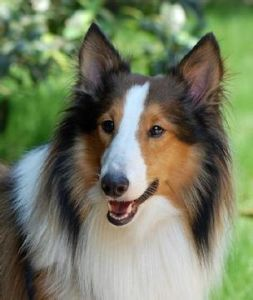

<!DOCTYPE html>

<html lang="en">
    <head>
        <body background="001.jpg"
        <meta charset="utf-8" />
        <title>牧羊犬</title>
    </head>
       <font color="#cc33ff"size="6"><h3>牧羊犬<h3></font>
        <hr>
        
        <title>ch03-4</title>
        
         <pre>
牧羊犬是一類受人馴養的狗，屬於較為活潑且聰明的犬隻。
原來的培養目的為了對家畜，尤其是羊隻進行守衛與集趕。
除了原先的作業用途之外，現今的許多牧羊犬成為了家中的寵物。
          </pre>   
        <html lang="en">
    <head>
        <meta charset="utf-8" />
        <title>牧羊犬</title>
    
    <hr>
    <a href="index.html">貴賓狗</a> &nbsp;&nbsp;&nbsp;
    <a href="002.html">奶油臘腸</a> &nbsp;&nbsp;&nbsp;        
    </body>
</html>


    </body>
</html>
